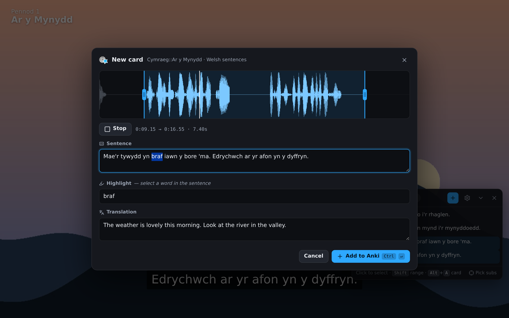
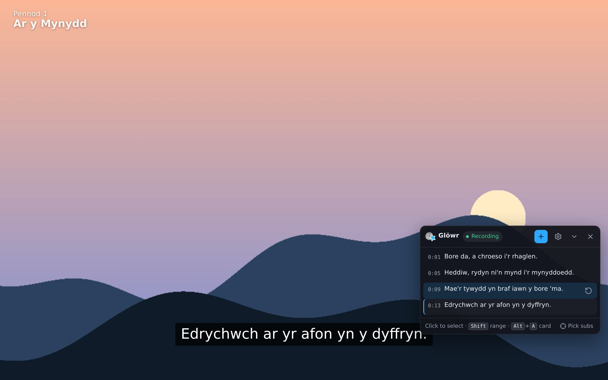
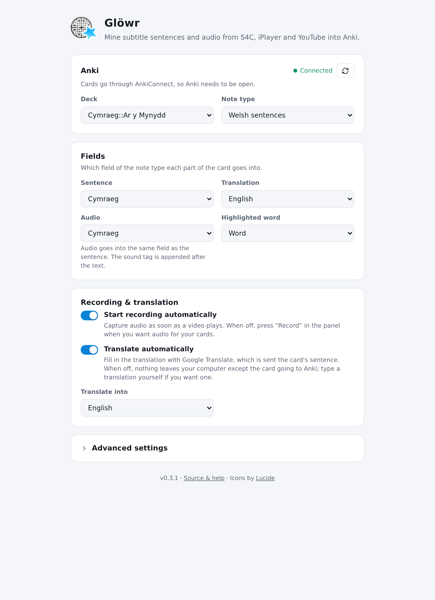

Glöwr turns subtitle lines from the programmes you watch into Anki cards, with the audio clip, a translation and the word you're learning. One shortcut, no copying and pasting.

Made for learning Welsh from S4C, and works with any language that has subtitles.
The clip is already trimmed to the sentence. Fine-tune it by dragging the handles on the waveform.
A panel lists what's been said. Pick one line or several, or replay any of them.
YouTube's auto-generated captions, which appear word by word, are collected as whole lines.
A translation is filled in for you, or turn that off and write your own. Double-click a word to bold it and save it to its own field.
Choose the deck, note type and fields from dropdowns filled from Anki.
No account, no server, no tracking. Audio stays on your computer until it goes to Anki.
The panel sits over the video, follows it into fullscreen and can be dragged anywhere. Press Alt+A when you hear something worth keeping.


Pick where each part of the card goes. If a site changes its player and lines stop appearing, press Pick subs and click the subtitles on the video; Glöwr works out where to read them from.
Three steps once it's installed.
You'll need Anki with the
AnkiConnect add-on (code 2055492159), open while you make cards.
Version 120 or later
Add to ChromeFrom the Chrome Web Store. Works in Edge and Brave too.
The first time you open Glöwr's settings, Anki asks whether to allow it. Choose Yes, then pick your deck, note type and fields.
S4C Clic, BBC iPlayer and YouTube. Subtitles need to be switched on in the player. Netflix and other services that use DRM don't allow their audio to be recorded.
Browsers only let a page record audio after you've interacted with it. Click anywhere on the page once.
Glöwr can only clip audio it heard. Play the line through once at normal speed while the panel says Recording. At other speeds recording pauses, since sped-up audio makes a poor card.
The card's sentence goes to Google Translate for the translation, and the finished card goes to Anki on your own computer. Nothing else leaves your browser. You can turn automatic translation off in Settings, and then only the card goes to Anki.
Glöwr is Welsh for a coal miner. Collecting sentences from what you watch is called sentence mining.